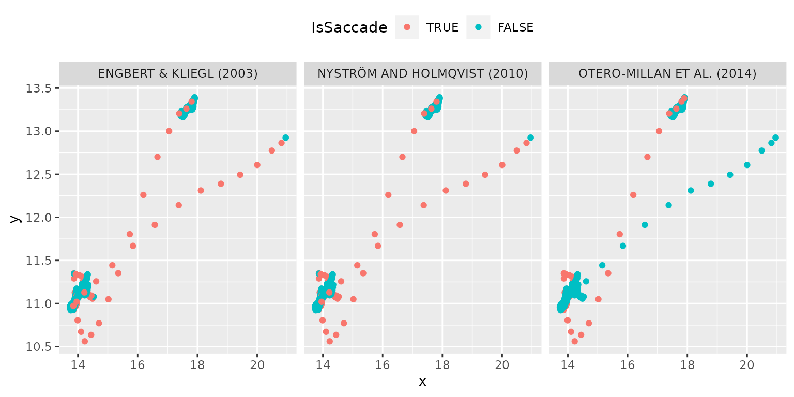

Function extract_saccades() has an option to return
sample votes for each method via return_votes = TRUE
parameter. Here is an example of using them for internally implemented
methods.
data("single_trial")
methods_to_use <- list("Engbert & Kliegl (2003)" = method_ek,
"Otero-Millan et al. (2014)" = method_om,
"Nyström and Holmqvist (2010)" = method_nh)
votes <- extract_saccades(x = single_trial$x,
y = single_trial$y,
sample_rate = 500,
methods = methods_to_use,
return_votes = TRUE)
single_trial_with_votes <- list()
for(imethod in 1:length(methods_to_use)){
single_trial_with_votes[[imethod]] <- single_trial
single_trial_with_votes[[imethod]]$Method <- toupper(names(methods_to_use)[imethod])
single_trial_with_votes[[imethod]]$IsSaccade <- votes[, imethod]
single_trial_with_votes[[imethod]]$IsSaccade <- factor(single_trial_with_votes[[imethod]]$IsSaccade == 1,
levels = c(TRUE, FALSE))
}
ggplot(do.call("rbind", single_trial_with_votes),
aes(x = x, y = y, color = IsSaccade)) +
geom_point() +
facet_grid(. ~ Method) +
theme(legend.position = "top")
Same data but using Nyström and Holmqvist (2010) to compute velocity and acceleration
votes <- extract_saccades(x = single_trial$x,
y = single_trial$y,
sample_rate = 500,
methods = methods_to_use,
velocity_function = diff_nh,
return_votes = TRUE)
single_trial_with_votes <- list()
for(imethod in 1:length(methods_to_use)){
single_trial_with_votes[[imethod]] <- single_trial
single_trial_with_votes[[imethod]]$Method <- toupper(names(methods_to_use)[imethod])
single_trial_with_votes[[imethod]]$IsSaccade <- votes[, imethod]
single_trial_with_votes[[imethod]]$IsSaccade <- factor(single_trial_with_votes[[imethod]]$IsSaccade == 1,
levels = c(TRUE, FALSE))
}
ggplot(do.call("rbind", single_trial_with_votes),
aes(x = x, y = y, color = IsSaccade)) +
geom_point() +
facet_grid(. ~ Method) +
theme(legend.position = "top")
Nyström, Marcus, and Kenneth Holmqvist. 2010. “An adaptive algorithm for fixation, saccade, and glissade
detection in eyetracking data.” Behavior Research
Methods 42 (1): 188–204. https://doi.org/10.3758/BRM.42.1.188.